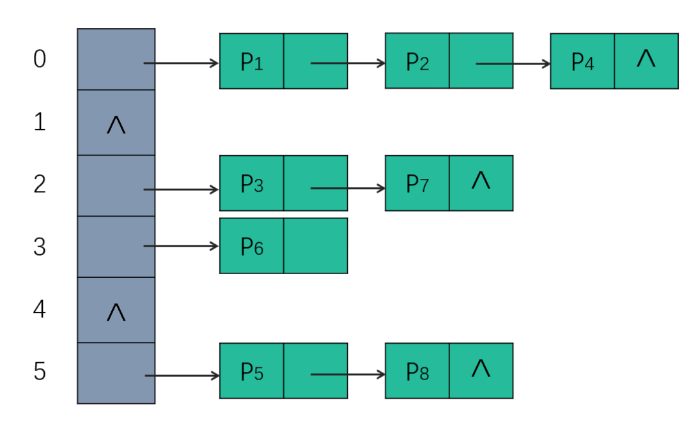

标准模板库(Standard Template Library, STL)是一个 C++ 软件库，大量影响了 C++ 标准程序库但并非是其的一部分。其中包含 4 个组件，分别为容器、算法、函数、迭代器。
容器
vector
底层是一块具有连续内存的数组。
支持 O(1) 的随机访问。
对于插入和删除操作，都是在尾部最快，头部最慢，就跟普通数组一样存在元素的移动。
对于查找，无序 vector 为
O(n)，有序 vector 可以利用二分查找降低至
O(log n)。
vector
的核心在于其长度自动可变，即扩容机制：当目前可用的空间不足时，分配目前空间的两倍或者目前空间加上所需的新空间大小（取较大值），将原有元素移动到新的内存空间后，释放原来的空间。
由于二倍扩容机制可能会导致内存的浪费（无法重新利用原来的内存），内存不足时扩容的拷贝也会造成较大性能开销。如果使用者能对容量有预期，那么采用
vector::reserve()来预先分配内存，将大大的提高性能。
如何释放内存？
vector::clear()
方法仅仅移除元素，底层分配的内存并不会随之减少，此时调用
vector::empty() 可能为
true，但真正获取已分配内存大小的
vector::capacity() 不一定返回 0，甚至是一个大数。
那么如何释放内存呢？比如一个 vector<int> nums，
比较 hack 的一种方式是
nums = {}，这样既可以清空元素还会释放内存。正规的做法是调用
vector::swap() 与一个空
vector（为右值）进行底层数组的交换，交换后
nums
指向一个空数组，而另一个右值会在当前作用域结束后被回收。
1 | vector<int>().swap(nums); // nums 为待释放的 vector |
而当 vector
里面存了指针时，上面的做法并不会释放指针指向的那片内存，从而导致内存泄漏。应当首先遍历
vector 逐个 delete/free()。
1 | for (auto&& iter = nums.begin(); iter != nums.end(); iter++) { |
emplace_back() 和 push_back() 的区别
前者是直接在指定位置，根据传入的参数列表，通过
std::forward
转发的形式调用初始化构造函数。
后者则需要调用拷贝/移动构造函数，效率较前者更低。
list
底层是双向链表。
不支持随机访问，只能通过遍历的方式查找，复杂度为
O(n)。
插入和删除的速度快，当已定位到待插入/删除的位置时，只需要调整指针的指向，复杂度为
O(1)。
deque
双向队列，由分段连续空间构成，每段连续空间是一个缓冲区，由一个中控器来控制。它必须维护一个中控器指针，还要维护
start 和 finish
两个迭代器，分别指向第一个缓冲区和最后一个缓冲区。
可以在前端或后端进行扩容，这些指针和迭代器用来控制分段缓冲区之间的跳转。
支持随机访问，但性能比vector要低
支持双端扩容，因此在头部和尾部插入和删除元素很快，为
O(1)，但是在中间插入和删除元素很慢。
set/map
这俩容器底层都是由红黑树实现的，其内部元素依照其值自动排序。增删查改的时间复杂度近似
O(log n)。
红黑树是一种二叉搜索树，但是它多了一个颜色的属性。红黑树的性质如下：
- 每个结点非红即黑；
- 根节点是黑的；
- 如果一个结点是红色的，那么它的子节点就是黑色的；
- 任一结点到树尾端（NIL）的路径上含有的黑色结点个数必须相同；
通过以上定义的限制，红黑树确保没有一条路径会比其他路径多出两倍以上。
为什么不用平衡二叉树(AVL)呢？尽管 AVL 是高度平衡的，但频繁的插入和删除，会引起频繁的旋转操作，导致效率下降。而红黑树是一种弱平衡二叉树，相对于严格要求平衡的平衡二叉树来说，它的旋转次数更少（红黑树的插入最多两次旋转，删除最多三次旋转），所以对于插入、删除操作较多的情况下，通常使用红黑树。
unordered_set/unordered_map
这俩底层是基于哈希表实现的，是无序的。理论上增删查改的时间复杂度是
O(1)（最差时间复杂度
O(n)），实际上数据的分布是否均匀会极大影响容器的性能。
冲突处理
以 unordered_map
为例，其底层哈希表采用链地址法解决冲突，如下图：

每产生一次哈希冲突，就在当前 bucket 中链入新数据。而当同位置上的元素节点大于 8 个的时候，会自动转化为成一棵红黑树，用于降低长链表的查找压力。
另外，哈希表存储结构还有一个重要的属性，称为负载因子，用于衡量容器存储键值对的空/满程度。负载因子越大，意味着容器越满，即各链表中挂载着越多的键值对，这无疑会降低容器查找目标键值对的效率；反之，负载因子越小，容器肯定越空，但并不一定各个链表中挂载的键值对就越少。如果设计的哈希函数不合理，使得各个键值对的键代入该函数得到的哈希值始终相同（所有键值对始终存储在同一链表上），这种情况下，即便增加桶数使得负载因子减小，该容器的查找效率依旧很差。
stack/queue
它们都是由 deque 作为底层容器实现的，通过修改
deque 的接口，实现独特的性质（此二者也可以用
list 作为底层实现）
stack 是 deque
封住了头端的开口，先进后出。
queue 是 deque
封住了尾端的开口，先进先出。
priority_queue
以 vector
作为底层容器，以堆作为处理规则。
stack/queue/priority_queue 都是容器配接器，是由容器按照特殊的逻辑实现的。